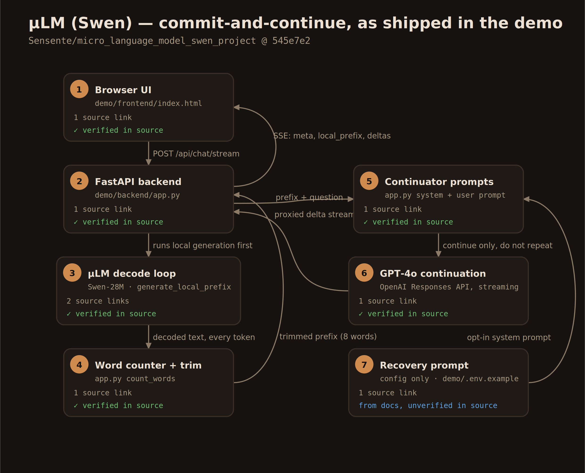
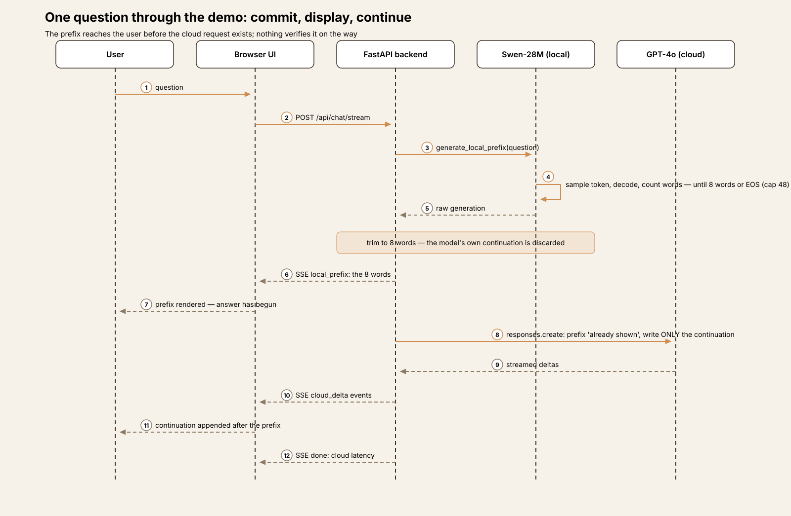

µLM: eight words, then faith
Teardown of the demo repository for "Micro Language Models Enable Instant Responses" (Cheng et al., EMNLP 2026), pinned at commit 545e7e2. The paper's framework is the subject; the repository is its only executable form. Claims about the code are pinned to files at that commit; claims about results are the authors', from the paper.
Most systems in this series spend their complexity budget after the model speaks: tools, sandboxes, memory, judges. This one spends it before — on the question of who gets to say the first eight words.
The setup, from the paper: a micro language model (µLM) of 8.8–29.5 million parameters runs on a device that cannot sustain even a 100M-parameter model — a watch, a pair of glasses. It generates the first four to eight words of the response immediately. A cloud model then continues the answer from that prefix, mid-sentence if necessary. The repository under review is the official demo: a 366-line model definition, a 316-line FastAPI backend, a 168-line web page, and the 28M checkpoint. Eight hundred eighty-three lines of code carry the whole framework, which makes it the smallest system this series has opened — and one of the most instructive, because almost everything that matters in it is a decision about ordering.

The model: a Llama in miniature, written out longhand
model_swen.py implements the µLM from scratch as a Hugging Face PreTrainedModel: a decoder-only Transformer with a 512-wide hidden state, 8 layers, 8 attention heads sharing 2 key-value heads (grouped-query attention), a 1408-wide SwiGLU feed-forward, RMSNorm, and rotary position embeddings with a theta of 1e6 and an optional YaRN scaling path that the demo configuration leaves off.1 The vocabulary is 12,288 BPE tokens — a tokenizer trained on the pretraining corpus itself, sized to keep the embedding table from eating the parameter budget, which at this scale it otherwise would: embeddings are over a fifth of a 28M model at this width.2
Nothing here is exotic, and that is the point the paper makes with its ablations: at 8–30M parameters the architecture is a commodity, and what survives the shrink is decided by the data. The µLMs are pretrained from scratch on 1.485B tokens of cleaned chat dialogue and fine-tuned on a further 323.4M, all of it conversational — the model is trained to be an opener of replies, not a general reasoner.3 The demo's loader reflects the scale honestly: strict state-dict loading, weight tying applied by hand after the load inside a try/except, and a warm-up forward pass on the word "hello" so the first real request doesn't pay it.4
The loop: fifty tokens of budget, eight words of commitment
The backend's local generation is a hand-rolled decode loop — no generate(), no KV-cache plumbing visible at this level, just the model called token by token with temperature 0.5 and top-p 0.9 sampling.5 After every token, the loop decodes the entire sequence so far and counts words, where a word is whatever survives a whitespace split.6 The loop stops when the count reaches the configured prefix length — eight words by default — or when the model emits its end token, with a hard cap of 48 new tokens. The word check runs before the end-token check, so a token that both completes the eighth word and ends the sequence is counted as a word first.7
Then comes the detail the paper does not mention: the generated text is trimmed to exactly the first eight words before it is used for anything.8 The loop's stopping rule is approximate — a single token can carry the count from seven words to nine — so the prefix the user sees, and the prefix the cloud model is seeded with, is a post-hoc cut of a longer generation. The untrimmed text is not discarded: it travels to the browser in a metadata event, where the demo page receives it and does nothing with it. The model's own continuation of its opener exists, is transmitted, and is ignored — the cloud model will write a different one.
The handoff: display first, ask later
The ordering of the streaming endpoint is the framework in one function. The request handler runs the local generation to completion, then opens a server-sent-events stream. The stream's first content event is the prefix itself; only after emitting it does the backend construct and start the cloud request.9 The browser renders the prefix the moment that event arrives and appends the cloud's deltas after it, so what the user reads is the stitched text in the order the paper prescribes: local words instantly, cloud words whenever they come.10
Two consequences fall out of that ordering, both visible in the code. First, there is no verification path. Nothing scores, filters, or even inspects the prefix between generation and display — the word counter is the only gate, and it gates on length, not content. The paper is upfront that this is the design (the prefix is committed without cloud verification, which is what makes the first token independent of the network), and the code is faithful to it: the commitment really is unconditional.11 Second, the failure mode is inherited from the same ordering: if the OpenAI key is missing, the prefix has already been emitted when the stream yields its error event. The user is left holding eight words and an apology — the one seam the framework cannot stitch.
The cloud side of the contract is two prompts. The user message frames the situation with unusual honesty: it labels the prefix as "already shown to the user" and instructs the model to write only the continuation, not to repeat the prefix, and to start "naturally from the next token onward." The system prompt says the same thing in the model's ear: continue naturally, do not repeat, keep the tone coherent. The call itself is the OpenAI Responses API in streaming mode, GPT-4o by default, capped at 256 output tokens.12 The paper's §3.2.1 describes this handoff as instruction following — suppressing the continuator's trained defaults to restate, comment, or open afresh — and the demo's prompts are that description, verbatim in miniature.

The second prompt: recovery lives in a config file
The paper defines three error-recovery modes for when the opener goes wrong: Explicit correction (a single sentence prefixed "Correction:", then the full answer), Natural recovery (an unflagged bridging sentence of at most twelve words, then the answer), and Humor-aware recovery (a witty pivot that treats the error as a creative detour).13 None of the three is implemented as code. But one of them is in the repository — in the example environment file, as an alternative system prompt the operator can switch on.
That prompt is the Natural recovery instruction set, nearly clause for clause: the output will be concatenated immediately after the opener; if the opener is a fragment, add the minimum tokens to finish the sentence; if its direction is "dubious or unhelpful," use a "human self-repair pivot" — one bridging sentence of at most twelve words, a light playful aside permitted (the humor-aware fold-in), and a banned list of blunt-negation words the model must not use: "wrong," "incorrect," "misunderstanding," "does not support," "not possible." Then the correct answer, in two to five bullets, with at most one clarifying question.14
It is a genuinely interesting artifact. The framework's most distinctive mechanism — the recovery behaviour its user study is about — ships as configuration, off by default, in a file most readers of the repository will never open, while the code default remains the plain continuation prompt. Which framework you get depends on which file you read. Explicit correction, the paper's stated default mode, appears nowhere in the repository at all.
What is not here
The absences are as systematic as the presences. There is no training code, though the paper's central empirical claim is about training at this scale. There is no evaluation code: no Handoff Correction Rate computation, no judge prompts, none of the four boundary metrics the paper evaluates with. There is no embedded code: the Orange Pi latency numbers (45 ms to first token, four words in 55 ms) come from a deployment that is not in the repository. And there is no conversation: each request rebuilds its history from a single user message, the backend keeps no session state, and the paper's own suggestion that multi-turn context "be managed by the cloud LLM" is implemented on neither side — the cloud call, too, sees exactly one question and one prefix.15
The continuator gap deserves its own line. The paper's headline preference study and its main results table are built on open continuators — Qwen3-235B-A22B for the recovery study, with Qwen3-30B and Qwen2.5-72B also evaluated. The demo can only call OpenAI; GPT-4o is one of the paper's evaluated continuators, so the demo is not unfaithful, but the system as shipped runs the one configuration in which the continuator is a closed API and the opener is the only local part.16
Verdict
As a demo, this is well-built: the model is real, the loop is legible, the streaming order does exactly what the paper promises, and the whole thing can be read in one sitting — a virtue this series does not take for granted. As the framework's executable form, it is a partial print: the handoff mechanics are all here and exactly as simple as claimed, while the recovery system — the part the paper's user study actually measures — exists only as a prompt in an example config, and everything quantitative lives in the paper alone.
That split is itself the finding worth keeping. The µLM framework is a contract between two models, and contracts in this series keep turning out to be made of different materials in different systems: TalkAct's is a data structure enforced by a tool schema; this one is two prompt strings and an ordering guarantee in a streaming endpoint. Both work. But only one of them can be checked — and the distance between the paper's three recovery modes and the repository's one config file is the distance between a contract described and a contract shipped.
demo/model/model_swen.py#L5—SwenConfigdefaults: hidden 512, 8 layers, 8 heads, 2 KV heads (L19), vocab 12,288 (L20), intermediate 1408, RoPE theta 1e6, YaRN scaling available but gated oninference_rope_scaling;SwenForCausalLMat L322. ↩Embedding share computed from the config at the pin: 12,288 × 512 ≈ 6.3M parameters in the (tied) embedding table of a ~28M model. ↩
Paper, §3.1 and Appendix A — pretraining corpus from UltraChat, MOSS, and Instruction_merge_set, English-only, cleaned; 1.485B non-padding tokens; BPE tokenizer trained on the corpus at vocab 12,288; SFT set 323.4M tokens. Training code is not in the repository. ↩
demo/backend/app.py#L110—load_model_and_tokenizer: strictload_state_dict, manual tying at L143 (lm_head.weight = embed_tokens.weight, in try/except), warm-up forward pass before the state is marked loaded. ↩demo/backend/app.py#L168—generate_local_prefix: per-token loop over the model, temperature/top-p fromDemoConfig(defaults 0.5 / 0.9), caplocal_max_new_tokens= 48. ↩demo/backend/app.py#L100—count_words: whitespace split; the comment notes CJK blocks count as non-whitespace segments. ↩demo/backend/app.py#L195— word-count break checked before the EOS break at L197;prefix_wordsdefault 8 fromSWEN_PREFIX_WORDS(L43). ↩demo/backend/app.py#L210— "Trim to exact first N words for UI and cloud continuation seed"; the untrimmed text returns asraw_local_text(L215) and is sent in the stream'smetaevent (L308). ↩demo/backend/app.py#L225—stream_cloud_continuationyields thelocal_prefixSSE event (L231) before building the cloud request; the handler at L293 runs local generation first (asyncio.to_thread, L299). With no API key configured, the same function yields anerrorevent after the prefix. ↩demo/frontend/index.html#L145— the page renders onlocal_prefixand appends oncloud_delta(L147), parsing the SSE stream manually from afetchreader. ↩Paper, §1 and §3.2 — the prefix is committed without cloud verification; the paper contrasts this with speculative decoding, where drafted tokens are validated by the large model before use. ↩
demo/backend/app.py#L241—client.responses.create, streaming; default modelgpt-4oand 256 max output tokens fromDemoConfig; system prompt default at L46. ↩Paper, §3.2.2 and Figure 3 — the three recovery modes; full instruction sets in §M.2; Explicit correction is described as the default mode. ↩
demo/.env.example— the shippedCLOUD_SYSTEM_PROMPTvalue: concatenation contract, minimum-token fragment completion, ≤12-word self-repair pivot with playful aside, banned blunt-negation words, 2–5 bullet answer, at most one clarifying question. The code default atapp.py#L46is the shorter plain-continuation prompt. ↩demo/backend/app.py#L173— history is a single user message per request; paper, Limitations — single-turn formulation, with multi-turn context suggested as the cloud model's responsibility. ↩Paper, §4.2, Table 1 and Figures 5–6 — continuators evaluated: Qwen3-30B-A3B, Qwen2.5-72B, Qwen3-235B-A22B, GPT-4o; the preference study (15 participants) pairs µLM-28M with Qwen3-235B-A22B. Demo cloud access is OpenAI-only (
DemoConfig.openai_model, defaultgpt-4o). ↩